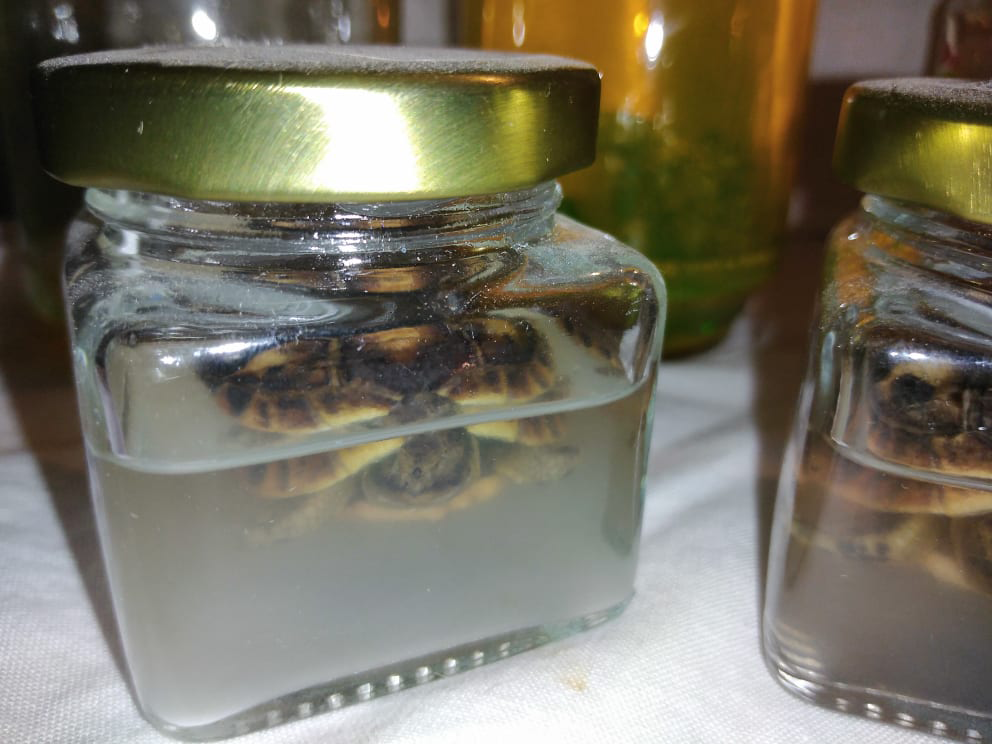
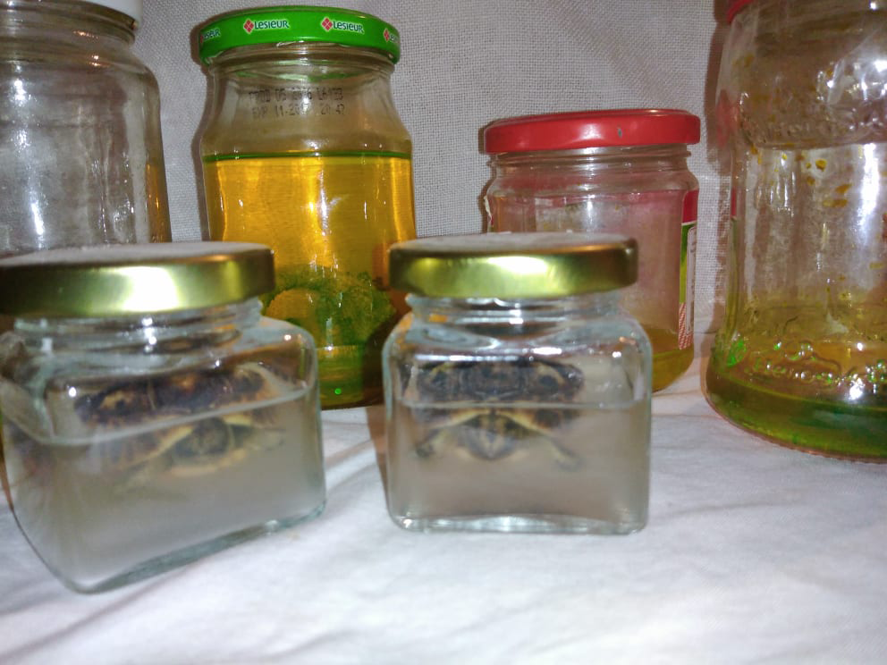
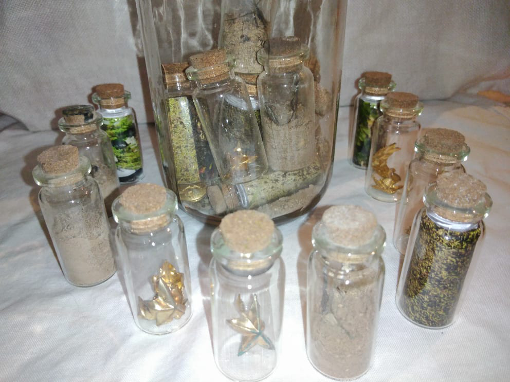
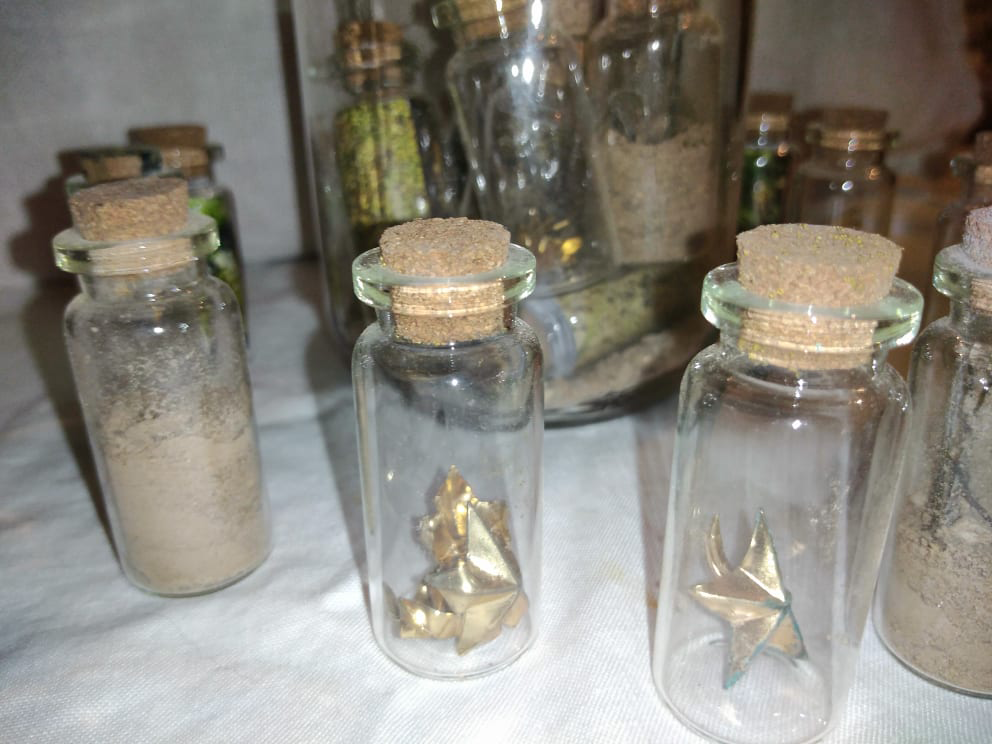
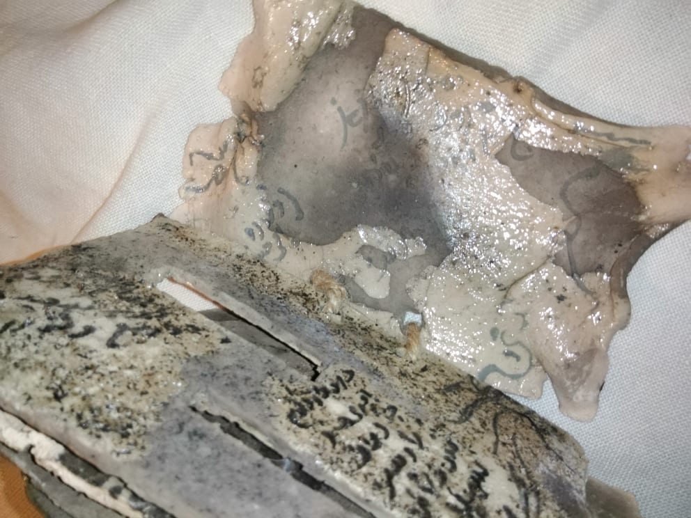
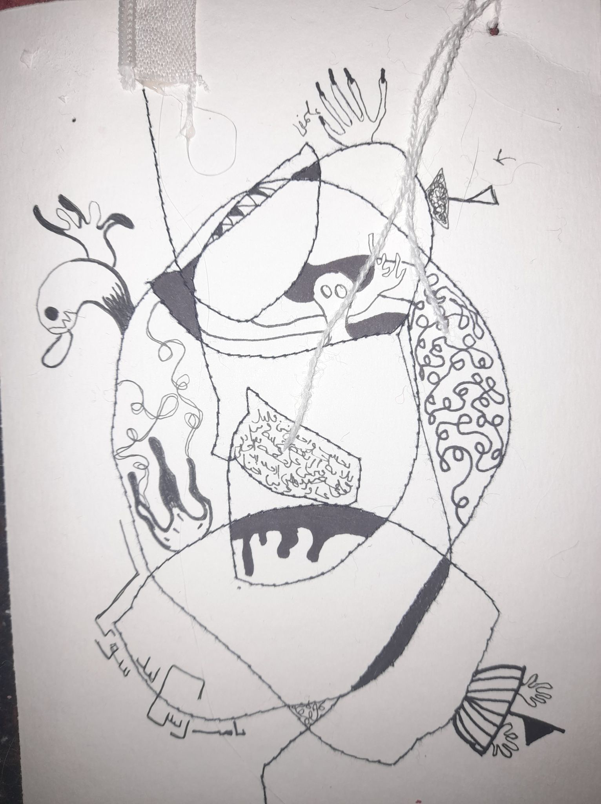
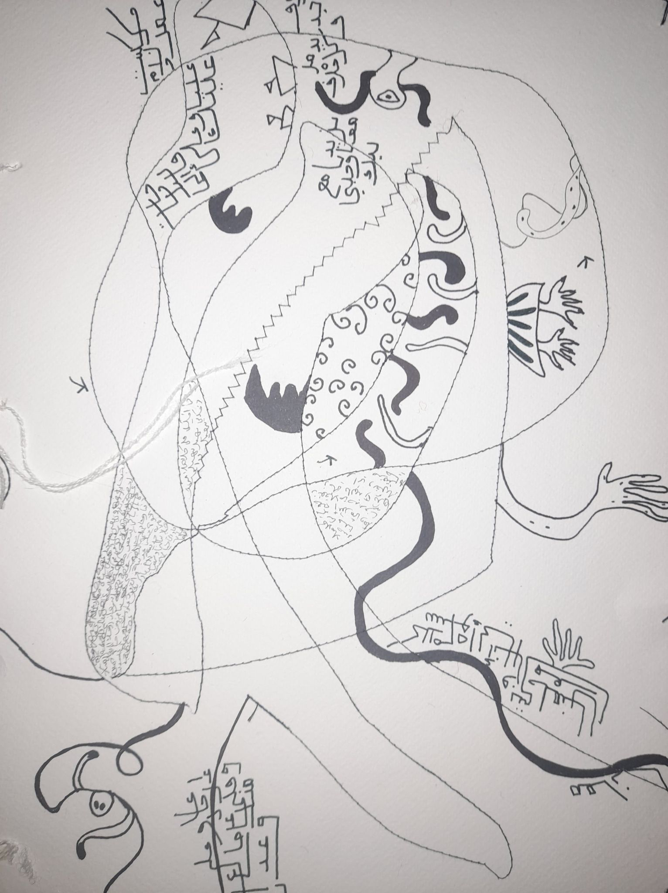

Solo Exhibitions
2019: ISBAS exhibition, Yahya Ben Omar art Gallery, Sousse, Tunisia 2019 : Printemps de Sousse 26th Edition,’ Lumière fleurie ‘ association, El Koubah Museum, Sousse (Sousse Municipality And ‘Lumiére fleurie’ association). 2019 : Printemps de Sousse 26th Edition, El Birou Art Gallery, Sousse, Tunisia, (Sousse Municipality And ‘Lumiére fleurie’ association). 2018: Second vie 4th edition, El Birou Art Gallery, Sousse, Tunisia, (curator: Wissem El Abed). 2018: UV 2th edition, El Birou Art Gallery, Sousse, Tunisia, (curator: Wissem El Abed).
Group Exhibition
2019 : Printemps de Sousse 26th Edition, El Birou Art Gallery, Sousse, Tunisia, (Sousse Municipality And ‘Lumiére fleurie’ association). 2018: UV 2th edition, ISBAS, Plastikos Club, Sousse, Tunisia, (curator: Wissem El Abed).
Selected works
- After life collection (2016/2021)
- Second life (2017)
- Pensées Plastique 2018
- Discours interne 2020
After life collection (2016/2021)
 Yasmine’s works or also Jaz works is known by the idea of collections. This group is the second life of these crushed animals over a period of six years, which collected them and preserved their condition after death at the last moment, canned them. It’s an expression of another life, a new life another one, this group is yet under the effect of collecting process.
Second life (2017)
 As it was previously mentioned that Yasmine was also known for the idea of collection and collecting, and here we also come back to this work. It is a group of small bottles that carry the soil of the tombs of the martyrs of the armies of the Jews in Tunisia (Sousse, Enfidha to be specific) and it was based on Jewish concepts such as the numbers 3, 6, and so on. These flasks bear parts of the army slogans at that time, pictures of graves in a figurative manner and a handful of dust of some people as commanders, officers and soldiers, so we go back to the idea of personal and collective memory and what remains of it and it is one of the foundations of Yasmine’s work.
Pensées Plastique 2018

This work was part of a research project that graduated Yasmine Hamrouni, who was established by adopting memory and embodying mental and internal features of it on ceramic plates, depending on her study of this technique, where a new special for clay was included through the incorporation of paper into dough to focus the idea of dialogue and narrate its personal story.
Discours interne 2020
 Writing and scribbling is one of the most important sources of contemplation and a source of inspiration for Jaz. In this step, her work was transferred from ceramic plates to sheets of different shapes and sizes that contain scribbles and drawings that are the product of hallucinations and episodes of schizophrenia that she is experiencing, where she added the idea of knitting and sewing to the story. It is a work assembled as a composition that contains 33 works assembled with strings connecting them together.